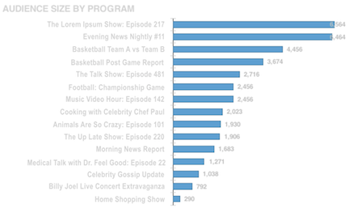
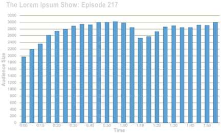
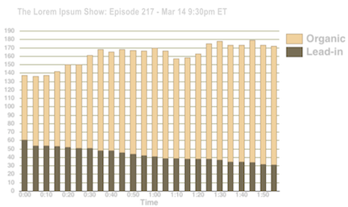

The Program Analytics Insight report summarizes in graphical form the audience size and
other metrics for your programs.
A "program" in this context is the schedule, assets, and virtual assets you combine with
Ooyala Schedule to form groups of content to be aired at specified times. For example, with
Ooyala Schedule you might create a program to run four times in one week. After the program
airs, the Program Analytics Insight Report aggregates data from all four airings to create
statistical graphs, which are described here. For more information, refer to the technical
details in Ooyala Schedule.
The Program Analytics Insights report in PDF is emailed weekly, every Monday morning, to your
defined distribution list.
The report has several parts:
Audience Size by Program
The
Audience Size by Program graph
shows the total number of viewers during the specified period, in descending order, with the
program with the smallest audience last.

Program Audience, Aggregate and Individual
For each program,
the
Program Audience section includes two graphs, both of which correlate specific data
points the time ticks of the program as it was aired during the reporting period.
First,
the aggregated audience size for the week is shown, mapped to the length of the program. The
X axis is the length of the program in minutes. All airings of the program in the specified
time period are combined into this one chart.

Second, the
Organic/Lead-in chart correlates the audience size for
specific airing the "unaggregated" audience of an individual airing of the program. The date
and time of the airing is shown in the graph title. Again, the X axis is the length of the
program in minutes.
